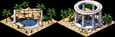
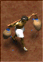
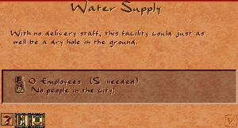

Water Supply

The Water Supply distributes clean drinking water to nearby housing by sending out roaming water carriers. It is one of the earliest demands housing makes — Crude Huts upgrade to Sturdy Huts only with water access, and all subsequent housing tiers require it.
Unlike a Well, the Water Supply actively dispatches workers who walk through the neighbourhood supplying every house they pass. This lets a single building cover a much larger area, reach housing deep on dry land, and support housing evolution all the way to the top tiers.
The Water Supply must be placed on grassland, which indicates the presence of underground water. It cannot be built on desert or bare rock. Citizens find it pleasant to live near — it is one of the few service buildings with a positive desirability effect.
Stats
- Cost (Normal)
- 40 Db
- Cost by difficulty
- VE 10 · Easy 20 · Normal 40 · Hard 80 · VH 140
- Requirement
- Groundwater (grassland tile)
- Labor category
- Water & Health
- Fire risk
- None (fireproof)
- Damage risk
- None
- Overlay
- Water
Overview
Access to clean water was a constant preoccupation of ancient Egyptian cities. The Nile provided water for agriculture and transport, but drinking water for urban populations had to come from wells and underground sources tapped along the floodplain. Sand inevitably contaminated open containers, and the proximity of humans and animals to water sources created persistent disease risks. The management of water supplies — who had access, how it was distributed, and who maintained the infrastructure — was the responsibility of local administration.
In the game, the Water Supply abstracts a network of storage pools, channels, and distribution workers into a single building that sends carriers through the streets. The ornate pillared variant that appears at high desirability reflects the real practice of embellishing civic water infrastructure in prosperous districts — wealthier neighbourhoods in Egyptian cities often had more elaborate and well-maintained facilities.
Mechanics
Water Carrier
The Water Supply spawns a Water Carrier, a roaming walker who wanders through the surrounding street network. Any house he passes within two tiles receives water service, resetting that house's water timer.

Re-spawns every 16 days · Speed 54 tiles/month
Key coverage numbers:
- Reliable range: ~26 tiles from the Water Supply. Houses within this radius will be serviced consistently on every walker pass.
- Extended range: up to ~34 tiles sporadically — the carrier occasionally wanders further but cannot be relied upon at that distance.
- Coverage duration: 160 days per visit, plus a 32-day grace period. A house begins to lose water service and risks devolving only after 192 days without a carrier passing.
- Respawn interval: a new carrier sets out every 16 days. With normal staffing there is almost always one carrier active or about to launch.
The Water Carrier is a roaming walker and does not follow a fixed route — he chooses randomly at each intersection. Road layout and Roadblocks control which streets he walks through. A dead-end street off the main road will be visited rarely; a loop road will be covered reliably.
Staffing effect
Understaffed Water Supplies send carriers less frequently and with reduced effectiveness. The info panel shows five staffing quality states (text group 108, entries 2–7). At zero workers the building is completely inactive and no carrier is dispatched.
Groundwater requirement
The Water Supply can only be placed on tiles with underground water, indicated in-game by green grassland. Desert tiles, bare rock, and floodplain do not qualify. Use the Water overlay (hotkey W) to see which areas have groundwater and which houses currently have water access.
Upgrade
When the desirability of the tile reaches a threshold, the Water Supply automatically upgrades its appearance: an open basin is replaced by a pillared pool structure. The upgraded building dispatches water carriers more frequently, increasing coverage density in the neighbourhood.
Because the Water Supply itself has a positive desirability (+4 at the tile, fading to 0 over 4 tiles), a cluster of Gardens or Statues nearby can push it over the upgrade threshold without much effort. The upgrade is cosmetic as well as functional — the pillared variant is a visible sign of a well-developed neighbourhood.
Water Supply vs. Well
Both buildings provide water, but they serve different stages of the game:
| Water Supply | Well | |
|---|---|---|
| Size | 2×2 | 1×1 |
| Workers | 5 | 0 |
| Cost (Normal) | 40 Db | 5 Db |
| Road access required | Yes | No |
| Groundwater required | Yes | Yes |
| Coverage mechanism | Roaming walker | Static radius |
| Effective range | ~26 tiles | Small fixed radius |
| Supports Common Shanty+ | Yes | No |
| Upgrades appearance | Yes | Yes |
| Desirability | +4 (positive) | +1 (slight) |
Wells are useful in the very early game or as gap-fillers for isolated housing on grassland. As soon as housing needs to evolve past Common Shanty, a Water Supply is required.
Placement
Place the Water Supply on a grassland tile within the housing cluster it will serve. Because the carrier is a roaming walker, the building works best when placed at the entrance to or inside the road network it needs to cover. A Water Supply placed on a dead-end road at the edge of the city will have a carrier who wanders away from housing rather than through it.
Unlike most service buildings, the Water Supply is desirable — you can place it directly adjacent to housing without harming evolution. Combining it with Gardens or a small park area near the housing entrance is both functionally sound and raises the local desirability enough to trigger the upgrade.
Road access is mandatory. The carrier spawns from the building and uses the road network exclusively. A Water Supply without a road connection is fully non-functional even if staffed.
Each Water Supply reliably covers a radius of about 26 tiles. For large housing blocks, plan one Water Supply per 26-tile section, staggered so their carriers' paths overlap slightly to avoid coverage gaps.
Tips
- The Water Supply unlocks in mission 0 (Nubt) as soon as a Granary accumulates 400 units of game meat. It is the third tutorial building after Hunting Lodge and Granary.
- If water carriers are not reaching certain houses, check road connectivity and consider adding a Roadblock to redirect the carrier into the uncovered area.
- The Water overlay (W) shows coverage in real time. Blue tiles have water access; tan tiles do not. Use it to identify gaps before housing starts devolving.
- Water Supplies are fireproof — no Firehouse patrol is needed. This frees up patrol coverage for higher-risk buildings nearby.
- To get the upgrade quickly: place a Garden on each of the four tiles adjacent to the Water Supply. The building's own +4 plus Garden bonuses typically clears the desirability threshold within a few tiles.
- On maps where grassland is scarce, plan Water Supply positions early before filling the area with housing. A Water Supply tile committed to housing cannot be reclaimed without demolition.
In the original game
Screenshot from Cleopatra: Queen of the Nile (Impressions Games, 2000).

Developer reference
All paths relative to the repository root.
Building config — src/scripts/buildings.js
The Water Supply definition is in src/scripts/buildings.js at the building_water_supply block (line 288).
building_water_supply {
animations {
base { pack:PACK_GENERAL, id:69, offset:0 } // standard appearance
base_work { pos[42, 10], pack:PACK_GENERAL, id:69, offset:1, max_frames:1 }
fancy { pack:PACK_GENERAL, id:69, offset:2 } // pillared / upgraded appearance
fancy_work { pos[10, 0], pack:PACK_GENERAL, id:69, offset:3, max_frames:1 }
}
building_size : 2
meta { help_id: 61, text_id: 108 }
labor_category : LABOR_CATEGORY_WATER_HEALTH
fire_proof : true
cost [ 10, 20, 40, 80, 140 ] // VE … VH
laborers [5]
fire_risk [0]
damage_risk [0]
desirability { value[4], step[1], step_size[-1], range[4] }
// +4 at tile 0 → +3 at 1 tile → +2 at 2 → +1 at 3 → 0 at 4+
needs { groundwater : true } // grassland only; no desert placement
min_houses_coverage : 50
}To adjust the desirability bonus, change value and step_size. Note that step_size[-1] means the bonus decreases by 1 per tile outward from the building. The upgrade threshold (desirability at which the fancy sprite activates) is controlled in C++ — see src/building/building_water_supply.cpp.
C++ implementation — src/building/building_water_supply.h / .cpp
src/building/building_water_supply.h declares building_water_supply (inherits building_impl).
spawn_figure()— creates the Water Carrier figure; respects staffing percentageupdate_month()— monthly tick; checks groundwater, manages figure lifecycleupdate_graphic()— switches betweenbaseandfancyanimations based on local desirabilityget_overlay()— returnsOVERLAY_WATER; the building is highlighted by the Water overlayon_place_checks()— validates groundwater under placement tile; shows warning if absent
Water carrier figure logic lives in src/figuretype/figure_water_carrier.cpp. Coverage is tracked per-house in src/grid/water_supply.cpp and src/city/city_water_supply.cpp.
Info window — src/scripts/ui_water_supply_window.js
The info window inherits the base building_info_window layout and adds a workers_desc field and a warning_text. The warning text is resolved from text group 108 (the building's meta_text_id):
[es=building_info_window]
info_window_water_supply {
related_buildings [BUILDING_WATER_SUPPLY]
ui : baseui(building_info_window, {
workers_desc : text({ pos[70, 144], font: FONT_NORMAL_BLACK_ON_DARK,
wrap:px(24), multiline:true })
warning_text : text({ pos[32, 46], wrap:px(26),
font: FONT_NORMAL_BLACK_ON_LIGHT, multiline:true })
})
}
// Staffing % mapped to 5 quality descriptors (entries 7, 5, 4, 3, 2 of text group 108)
workers.id = Math.approximate_value(b.worker_percentage / 100.0, [7, 5, 4, 3, 2])The warning_text defaults to entry 1 of group 108 ("the building is operating normally"). If road access is missing, it falls back to group 69 entry 25 (the generic no-road-access message).
Game messages — src/scripts/game_messages_en.js
| Key | ID | Line | When shown |
|---|---|---|---|
message_building_water_supply |
61 | 755 | Help panel (help_id: 61). Covers water carrier mechanics, groundwater requirement, overlay, upgrade condition, and desirability. References the history entry via link ID 156. |
Building name string: text group 108, entry 0 (text_id: 108). Worker quality strings are entries 2–7 of group 108. The Water overlay hotkey (W) is also documented in the keyboard commands message (ID 7).